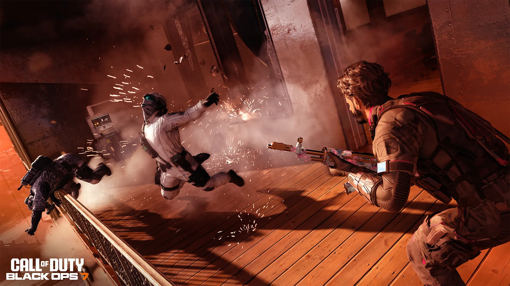
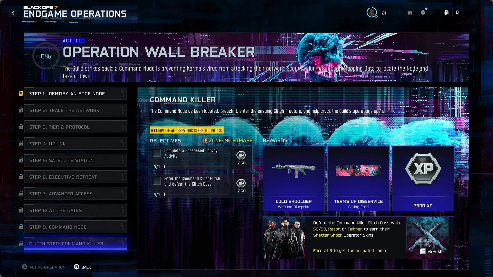
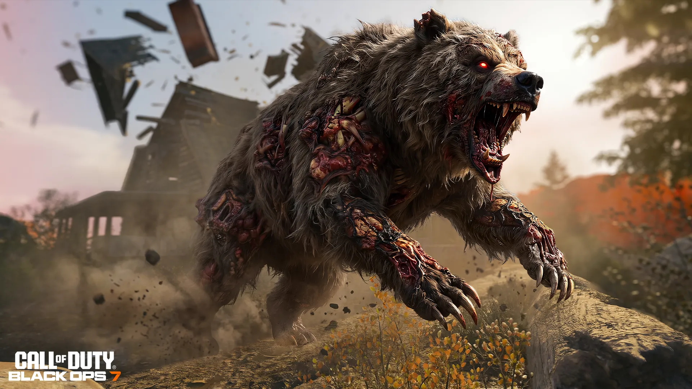
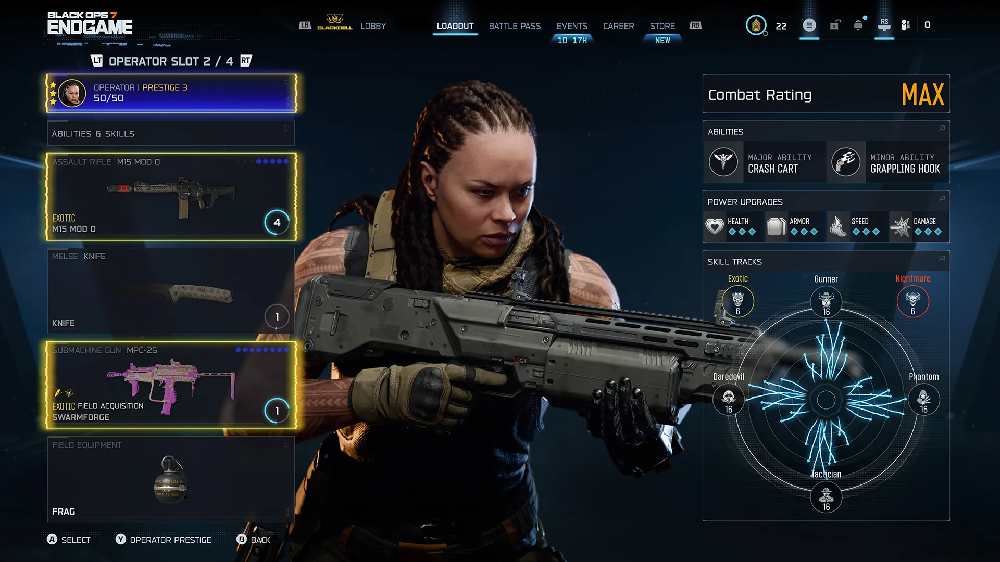
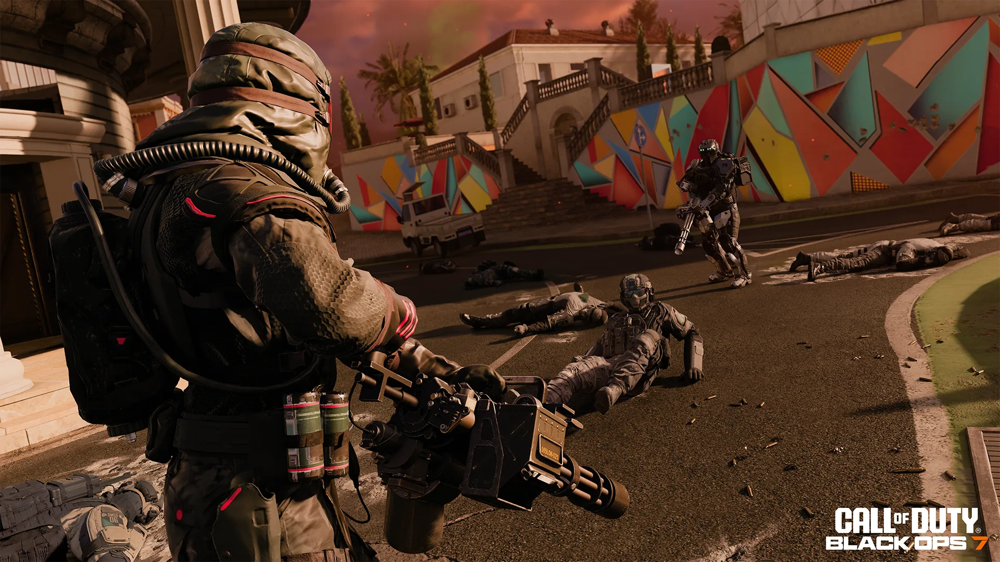

Análisis Táctico: Todo lo Nuevo que llega al Modo End Game en la Temporada 04

¡Atención, comunidad! Los canales oficiales de Activision han liberado los detalles operativos para el despliegue de la Temporada 04 de Black Ops 7 y Warzone. En este reporte estratégico nos saltamos el multijugador base para concentrarnos exclusivamente en el desglose de información crítica sobre la masiva expansión del modo cooperativo End Game en Avalon. Preparen sus estaciones en PS5, porque las dinámicas de extracción van a cambiar por completo.
1. Acto III: Operación Wall Breaker y la Zona Nightmare
La filtración del mapa de progresión de la campaña cooperativa confirma el despliegue del esperado Acto III: Operación Wall Breaker. Según los registros de la interfaz táctica filtrada, las escuadras se enfrentarán a la reestructuración cibernética de la red de Avalon controlada por The Guild.

El Glitch Boss Definitivo
Las misiones escalarán a través de 10 fases extremas en la nueva dificultad Zone: Nightmare. El despliegue final requerirá interceptar convoyes poseídos y ejecutar la misión Glitch Step: Command Killer.

Fauna Infectada de Élite
Se confirma la integración de armas pesadas de mano como miniguns para limpiar sectores infectados de alta densidad y la aparición de nuevas amenazas biológicas salvajes, incluyendo especímenes mutados de osos grizzly acorazados.
RECOMPENSAS EXCLUSIVAS DE TEMPORADA: Completar el Acto III desbloqueará de forma permanente el proyecto de arma exótico "Cold Shoulder" y la tarjeta de visita de prestigio "Terms of Disservice". Además, abatir al jefe final del Glitch usando a los operadores 50/50, Razor o Falkner otorgará los aspectos de operador de la serie Shatter Shock. Coleccionar los tres desbloquea un camuflaje animado universal.
2. Evolución del Armamento: Sistema de Prestigio del Operador
La gran bomba de la Temporada 04 es la introducción del Prestigio de Operador. Al alcanzar el nivel máximo de Combat Rating (CR), tendrás la opción de reiniciar por completo a tu personaje para iniciar un nuevo viaje de nivelación a cambio de desbloquear un poder permanente masivo.

El Sacrificio por el Poder Absoluto
Activar el Prestigio tiene un costo inmediato y severo: elimina todas tus habilidades equipadas, reinicia tu CR a cero, descarta tus adquisiciones de campo y devuelve tus armas de armamento a su rareza base. Te toca volver a desplegarte en Avalon en un estado completamente limpio.
Sin embargo, cada nivel de Prestigio te otorga acceso a conjuntos de habilidades adicionales imposibles de conseguir de otra manera:
- Prestigio 1: Desbloquea una ranura de habilidad exótica extra (Extra Exotic Skill Slot).
- Prestigio 2: Desbloquea una ranura de habilidad pesadilla extra (Extra Nightmare Skill Slot).
- Prestigio 3: Te permite equipar una 4.ª línea de habilidades completa (4th Skill Track) para alcanzar el estado definitivo 50/50 de combate.
Este sistema redefine por completo la economía del End Game, obligando a las escuadras a coordinar quiénes reinician su progreso y quiénes mantienen el armamento exótico para escoltar las extracciones en dificultad Nightmare.

3. Preparación de la Comunidad
Con la llegada de la dificultad Nightmare y los reinicios de Prestigio, el juego coordinado ya no es opcional. Dominar los atributos de tus personajes e inscribirse en las actividades de entrenamiento internas de la comunidad será el único método real para asegurar las extracciones con éxito sin perder tus pertrechos exóticos acumulados.